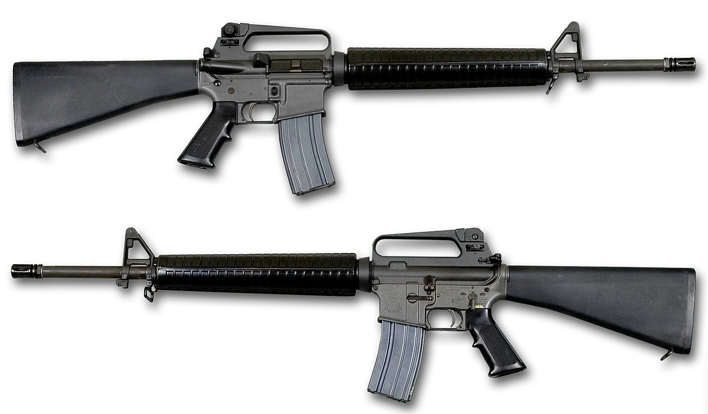

AK-47
The AK-47, officially known as the Avtomat Kalashnikova (Russian: Автомат Калашникова, lit. 'Kalashnikov's automatic [rifle]'; also known as the Kalashnikov or just AK), is an assault rifle that is chambered for the 7.62×39mm cartridge. Developed in the Soviet Union by Russian small-arms designer Mikhail Kalashnikov, it is the originating firearm of the Kalashnikov (or "AK") family of rifles. After more than seven decades since its creation, the AK-47 model and its variants remain one of the most popular and widely used firearms in the world.
Design work on the AK-47 began in 1945. It was presented for official military trials in 1947, and, in 1948, the fixed-stock version was introduced into active service for selected units of the Soviet Army. In early 1949, the AK was officially accepted by the Soviet Armed Forces[10] and used by the majority of the member states of the Warsaw Pact.
The model and its variants owe their global popularity to their reliability under harsh conditions, low production cost (compared to contemporary weapons), availability in virtually every geographic region, and ease of use. The AK has been manufactured in many countries and has seen service with armed forces as well as irregular forces and insurgencies throughout the world. As of 2004, "of the estimated 500 million firearms worldwide, approximately 100 million belong to the Kalashnikov family, three-quarters of which are AK-47s".[5] The model is the basis for the development of many other types of individual, crew-served, and specialized firearms.

M4 - Carbine
The M4 carbine (officially Carbine, Caliber 5.56 mm, M4) is a 5.56×45mm NATO assault rifle developed in the United States during the 1980s. It is a shortened version of the M16A2 assault rifle. The M4 is extensively used by the US military, with decisions to largely replace the M16 rifle in US Army (starting 2010) and US Marine Corps (starting 2016) combat units as the primary infantry weapon and service rifle. The M4 has been adopted by over 60 countries worldwide, and has been described as "one of the defining firearms of the 21st century".
Since its adoption in 1994, the M4 has undergone over 90 modifications to improve the weapon's adaptability, ergonomics and modularity, including: the M4A1, which strengthened the barrel and replaced the burst-fire option with a fully automatic option; the SOPMOD, an accessory kit containing optical attachments; and the underbarrel weapons such as M203 and M320 grenade launchers to the Masterkey and M26-MASS shotguns.
In April 2022, the U.S. Army selected the XM7 rifle, a variant of SIG MCX Spear, as the winner of the Next Generation Squad Weapon Program to replace the M16/M4.
M16A2
The M16 rifle (officially designated Rifle, Caliber 5.56 mm, M16) is a family of assault rifles adapted from the ArmaLite AR-15 rifle for the United States military. The original M16 rifle was a 5.56×45mm automatic rifle with a 20-round magazine.
In 1964, the XM16E1 entered US military service as the M16 and in the following year was deployed for jungle warfare operations during the Vietnam War.[19] In 1969, the M16A1 replaced the M14 rifle to become the US military's standard service rifle.[20] The M16A1 incorporated numerous modifications including a bolt-assist, chrome-plated bore, protective reinforcement around the magazine release, and revised flash hider.
In 1983, the US Marine Corps adopted the M16A2 rifle, and the US Army adopted it in 1986. The M16A2 fires the improved 5.56×45mm (M855/SS109) cartridge and has a newer adjustable rear sight, case deflector, heavy barrel, improved handguard, pistol grip, and buttstock, as well as a semi-auto and three-round burst fire selector. Adopted in July 1997, the M16A4 is the fourth generation of the M16 series. It is equipped with a removable carrying handle and quad Picatinny rail for mounting optics and other ancillary devices.
The M16 has also been widely adopted by other armed forces around the world. Total worldwide production of M16s is approximately 8 million, making it the most-produced firearm of its 5.56 mm caliber. The US military has largely replaced the M16 in frontline combat units with a shorter and lighter version, the M4 carbine. In April 2022, the U.S. Army selected the SIG MCX SPEAR as the winner of the Next Generation Squad Weapon Program to replace the M16/M4. The new rifle is designated XM7.

SA80
The SA80 (Small Arms for the 1980s) is a British family of 5.56×45mm NATO service weapons used by the British Army.[4] The L85 Rifle variant has been the standard issue service rifle of the British Armed Forces since 1987, replacing the L1A1 Self-Loading Rifle. The prototypes were created in 1976, with production of the A1 variant starting in 1985 and ending in 1994. The A2 variant came to be as the result of a significant upgrade in the early 2000s by Heckler & Koch and remains in service as of 2024. The A3 variant was first issued in 2018 with several new improvements.
The remainder of the SA80 family comprises the L86 Light Support Weapon, the short-barrelled L22 Carbine and the L98 Cadet rifle.
The SA80 was the last in a long line of British weapons (including the Lee–Enfield family) to come from the Royal Small Arms Factory, the national arms development and production facility at Enfield Lock, before its weapons factory was closed down in 1988.
L129A1
The L129A1, also known as the L129A1 Sharpshooter Rifle, is a 7.62×51mm NATO designated marksman rifle manufactured by Lewis Machine & Tool Company (LMT) for the British Armed Forces.